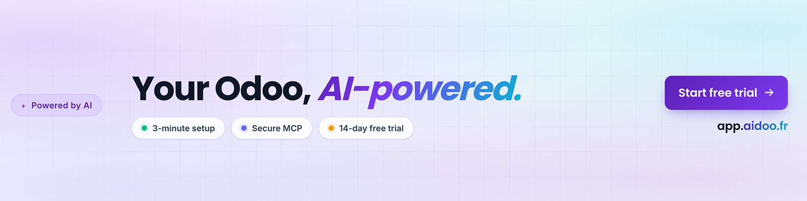
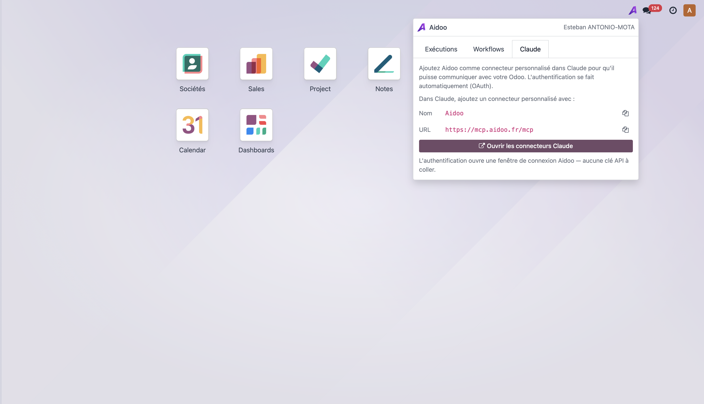
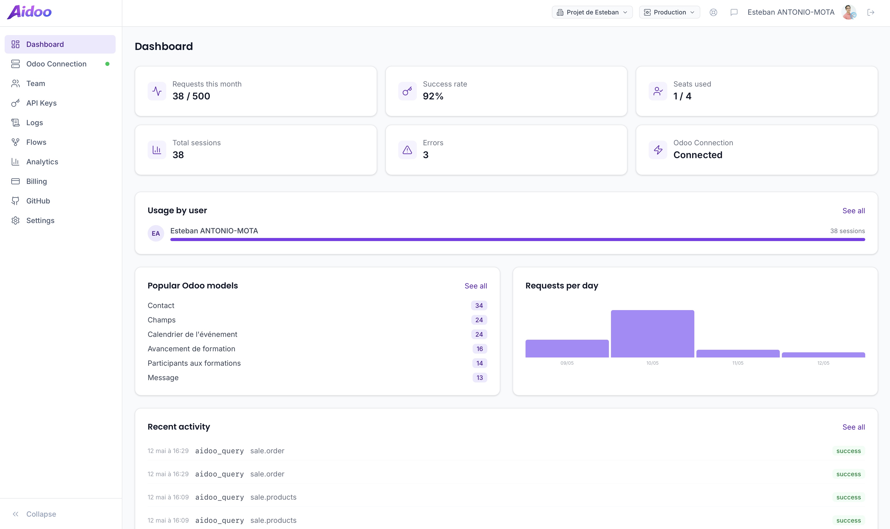
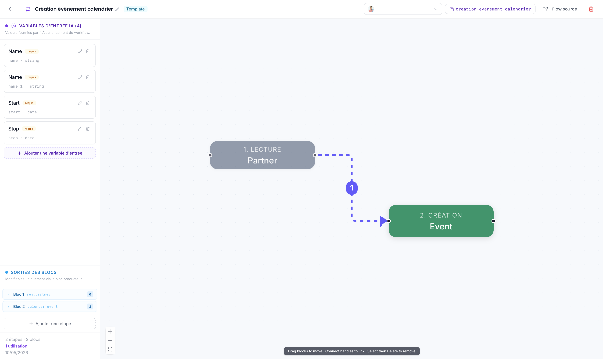
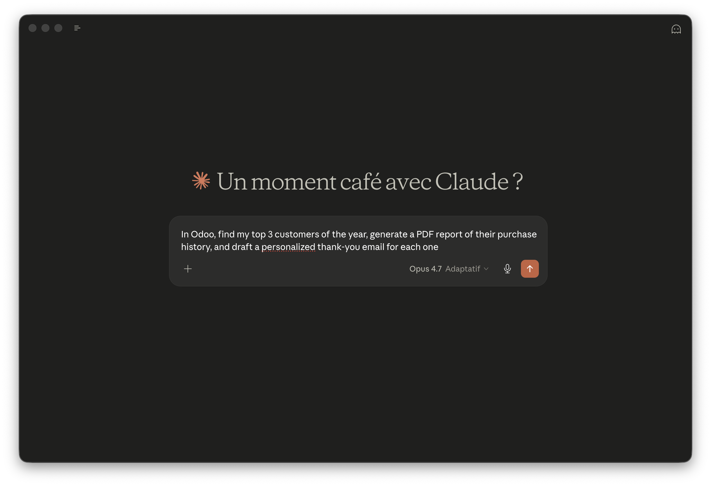

A discreet Aidoo icon appears at the top right of every Odoo page — only for users whose email is linked to your Aidoo workspace. One click opens the panel, with three tabs: Executions, Workflows and Claude. The "Open Claude" button starts a new Claude chat that can talk to your Odoo through the connector.

Beyond the Odoo button, Aidoo gives you a web dashboard to track requests, success rate, executions, the most-used Odoo models and your team's activity.

Build reusable AI workflows visually. Each one declares its input variables (Name, dates, IDs…) that Aidoo asks the AI to fill, and the steps that read or write Odoo records.

Once connected, Claude can act on your Odoo: find your top customers, generate a PDF report, draft a personalised email… One sentence, your data, real actions.

database.secret.What the module sends out of your Odoo:
sale.order) and the record ID — used to
highlight workflows compatible with that record and to
surface related executions.
Where the data goes: only to the Aidoo backend
URL you configured (default: api.aidoo.fr). The
connection key is encrypted on disk with your Odoo
database.secret using Fernet (AES-128-CBC + HMAC) —
it never reaches the browser.
Per-company isolation: a user can only see the
Aidoo panel if their Odoo email matches an Aidoo workspace
member of your own organisation. No cross-workspace leak is
possible — strictly enforced server-side on
api.aidoo.fr.
Third parties: if you connect Aidoo to Claude (Anthropic), your prompts and any data Claude reads back from Odoo through the MCP connector are also processed by Anthropic. Aidoo's full privacy policy: aidoo.fr/en/legal.
An Aidoo account at app.aidoo.fr —
sign up on aidoo.fr for a 14-day
free trial.
Python dependency installed automatically by Odoo: cryptography.
Email: esteban.antonio-mota@aidoo.fr
Website: aidoo.fr
Dashboard: app.aidoo.fr
Legal & privacy: aidoo.fr/en/legal